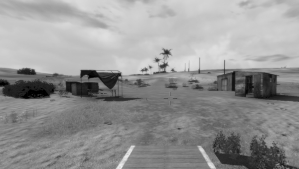

Demo Missions
The demo missions are not compatible with VBS4.
Mission Descriptions
Miscellaneous
Mission pack
Collection of 21 missions that demonstrate basic concepts in mission building and scripting.
Example_Missions.zip
Fast-roping
Using the fast rope scripts.
Fast_rope.Intro.zip
Item pickup and carry
Utilizing different methods to allow picking up and carrying items.
pickupAction.zip
Lights
Utilizing Category VBS Command Group OO Lights and Category VBS Command Group OO Particles for illumination and markings.
LightPoints.zip
Light Settings & Sliders
Using a dialog with Interactions - User Dialogs - Sliders to experiment with different Category VBS Command Group OO Lights.
LightSettings.zip
PreProcessor Commands
Use PreProcessor Commands to create a dialog and custom sounds.
Preprocessor.zip
Reference Markers
Use of Category VBS Command Group Waypoints Reference Markers.
referenceMarks.zip
Selections browser
Mission to browse and preview available textures and object selections.
SelectionBrowserVBS3.zip
Sound browser
Mission to browse and preview any in-game sounds.
soundBrowser.zip
Unit Path Recordings
Record player movements and engagements, and play them back, using an AI unit.
UPR_Demo.zip
Cameras/Video
Camera Shake
Experiment with addCamShake.
CamShake.zip
Field of vision
Testing and validating FOV settings.
chkFOV.zip
Post Processing
Experiment with post-processing effects.
PostProcessing.zip
Render to Texture (RTT)
Addon sources and scripts showing use of RTT cameras.
For more information, see Render to Texture (RTT) in the VBS3 Developer Reference.
RTT from vehicle
RTT camera attached to unmanned vehicle.
For more information, see Render to Texture (RTT) in the VBS3 Developer Reference.
Configuration
Custom Classes
Use addClass and addValue to create custom weapons in-game, based on existing classes.
The modified weapons will have different dispersion ranges, faster reload times, an no recoil.
customClasses.Intro.zip
Custom Event Handlers
Custom Event Handlers, defined in addons and scripts.
CustomEH_Demo.zip
Identities and sound
Identities and sounds, defined in description.ext (see Scripting with description.ext in the VBS Scripting Manual), as well as lip-synching effects.
Identities_and_Sound.zip
Dialogs
Basic dialogs
Creation and usage of basic dialogs and HUDs.
Dialog_Demo.zip
Checkboxes & radio buttons
Creation and use of checkboxes (multiple-choice) and radio buttons (single-choice).
Dialog_Checkboxes.zip
Color Picker
Mission to demonstrate the creation of a color picker dialog,
and the application of procedural textures to objects.
ColorPicker.zip
Compass HUD
Use of lines in controls.
compassHUD.zip
Custom Command Menus
Create Custom Command Menus (see Custom Command Menus in the VBS3 Scripting Manual), or add items to the standard command menu "Communication" group.
CustomCommandMenus.zip
Dialog Event Handlers
Interactions - User Dialogs in dialogs.
Dialog_EventHandlers.zip
Image Rotation
Rotate images in user dialogs.
ImageRotation.zip

Improved hint
Feature demonstration of fn vbs ImprovedHint.
fn_vbs_ImprovedHint.Intro.zip
Multi-column listboxes
Use of Multi column listbox.
2DListBox_Demo.zip

Map controls
Maps in Interactions - User Dialogs - Maps, as well as map animations and VBS User Interface Event Handlers.
DialogMap.zip
Briefing map animations
Animation of editor map via Interactions - User Dialogs - Maps.
MapAnim.zip
PlanView controls
Displays vehicle or building plans in a dialog.
PlanViewDemo.zip
Videos in dialogs
Play OGV videos in a dialog.
Dialog_Video.zip
Editor
Custom menu entries
Add user-defined entries to editor's menu bar, Interactions - User Dialogs - Maps and drawLine on the editor map.
addMenu.zip
Multiplayer
Triggers and messages
Utilize triggers and publicExec to show messages, and execute commands, only for specific users.
MP_Triggers.zip
Scripting commands
allowCreateShot
Create shots via mouse clicks.
allowCreateShot.zip
animate
Animate gates and dropping targets.
operateGate.zip
attachTo
Attaching several objects to a vehicle via attachTo.
attachTo.zip
attachTo helper
Script to help finding the right attachment position.
attachToHelper.Intro.zip
deployWeapon
Control weapons independently from player's animation.
deployWeapon.zip
VBS2PluginFileAccess
Create files, read them, and perform other file actions via VBS2PluginFileAccess.
VBSPluginFileAccess.zip
fire
Use of fire command, to have the player or AI shoot at a specified position.
fireAtPosition.zip
getCrewPos
Visualization of available crew positions in a vehicle.
getCrewPos.zip
nearRoads
Display road information on the map.
roadInfo.zip
say
A sound source attached to a moving vehicle.
movingSound.zip
setAction
Balance a car on two wheels via external control commands.
balance.zip
setCustomFormation
Define custom formation alignments.
setCustomFormation.zip
setThrustWanted
Use setThrustWanted to move a vehicle, allowing it to drive in areas that AI cannot navigate, or to move backwards.
thrustMove.zip
setTriggerAreaPolygonal
Define a trigger zone as a polygon.
Polygon_Triggers.zip
setVideoSetting
Demonstrate the effect of different distance settings (i.e. "viewDistance" & "objectDrawDistance").
setViewDistance.zip